In this project, we explored non-photorealistic rendering to create a tool for tattoo artists to easily generate designs in different tattoo styles. Our inspiration for this project came from the show Ink Masters, which our team members are all a fan of. On the show, we saw how difficult it was for tattoo artists to create art in many different art styles to please their clients. We hoped that our tool could help them easily create stencils in varying styles. By altering how light is rendered in a typical photorealistic manner we have learned in class, we created line art, stick & poke, American traditional, and chrome tattoo style renderings.
Line Art Style
To recreate line art, we needed to have lines emphasizing each of the curves and edges of our models. After researching multiple possible ways, we landed on using an edge detection filter as the simplest way to implement into our existing project 3 code. We decided to use the Sobel Edge Detection technique. Essentially how the filtering works is that we can create two kernel matrices that act as masks for detecting horizontal and vertical edges. For our implementation, we created a helper function Raytraced_Renderer::is_edge that basically applied the Sobel operator to the pixel, and returned whether that pixel was on an edge or not. Then, we just modified our Raytraced_Renderer::raytrace_tile method to call our new helper function!
|
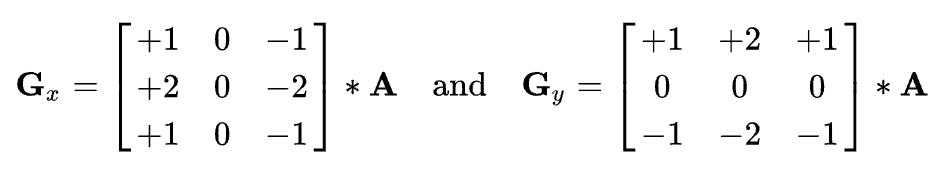
|
Each of the kernels are applied to the image, and we can then combine the outputs to find the absolute magnitude of the gradient at each point in our image. We calculate the gradient magnitude with |G| = sqrt(Gx + Gy). After we’ve calculated all of our gradients, we apply a threshold value that allows us to differentiate pixels that are part of an edge and those that are not. We played around with the value of the threshold a lot, seeing whichever would give us the best results and we found that a higher threshold reduced the noise in our image and produced more precise edges.
One big problem that we encountered was with our threshold value. At first, we didn’t realize that our implementation would only produce good results with a very high threshold value, so we were encountering very grainy results or even seeing 3 bunny outlines at some point. After increasing our threshold value, everything became a bit smoother and actually fit our bunny model.
|
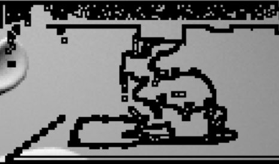
|
Another issue that we encountered is the way that the colors are stored in the data model of project 3, which is what we mainly built our project off of. Usually, colors are stored as rgb triplets. However, for this portion we were working with the 2D image buffers in the raytrace renderer, where colors were instead stored as hexadecimals. In order to be able to work with the colors as flexibly as we wanted to, we reversed the way the rgb values were stored in the image buffer using some bit twiddling. Since our research showed that Sobel worked best with grayscale values, we again averaged the values we retrieved and used the grayscale value in our gradient calculations. Unfortunately, this means that our edge detection isn’t great for detecting edges between colors that contrasted but shared similar grayscale values.
Stick and poke
Stick and poke tattooing seeks to create an image with a collection of dots of varying density to mimic shading. Images are generally grayscale and may or may not have an outline. On a high level, to create this effect, we first determined a grayscale value for each pixel. Since the density of dots create the values in stick and poke tattoos, we mimicked the effect by coloring each pixel either black or white according to a probability generated by their grayscale value. Therefore, pixels with a lower grayscale value (closer to white) have a higher probability of getting filled in with white and vice versa.
More specifically, we altered the PathTracer::raytrace_pixel() function. After generating the average value of the samples taken, we took the average of the rgb values((r+g+b)/3). This generates a grayscale equivalent using the average method described here. If we set each of r, g, and b to this average value, we get a grayscale equivalent of our original color (rgb(avg_val, avg_val, avg_val)).
Then, we want to decide whether to fill in the pixel with black or white based on this average value. Since the RGB values are between 0 and 1, we used the value directly as a probability. According to that probability, we generated random values to determine where the pixel would be colored white. For example, if our average value was 0.1, then the pixel would have a 10% chance of being colored white. We also added an offset of 0.035 (which we found works well via experimentation) which helped bring more white spots to the rendering, which stick and poke tends to have. Finally, we used update_pixel() to add the white or black color to our sampleBuffer.
During the process, we experimented with a couple of other ways to achieve this effect that failed. We first tried to generalize each tile to one value and randomly color in pixels according to the corresponding probability in the RaytracedRenderer::raytrace_tile() function. However, the tiles were too large for the images to be legible since a lot of the details were abstracted away. We also tried to make these tiles smaller, but discovered that calculating probabilities based on each pixel produced the most legible results. We also tried to reveal more white parts by eliminating midtones and just making them white, but found that this created unpredictable results depending on the lighting of the original image. Adding an offset to our average worked out a lot better.
American Traditional
American traditional tattoos try to use bold, thick outlines and stark contrast of solid black and a limited palette of bright colors (but mainly red, greens and yellows). There’s a tendency to simplify lighting, making the designs look more 2D. We can try to achieve this by reducing the complexity of the hues and shades in the mesh to the closest or desired palette color.
One method we used to accomplish this was by assigning our pixel color to the color in our palette that had the shortest euclidean distance from the original pixel color in our PathTracer::raytrace_pixel() function
| 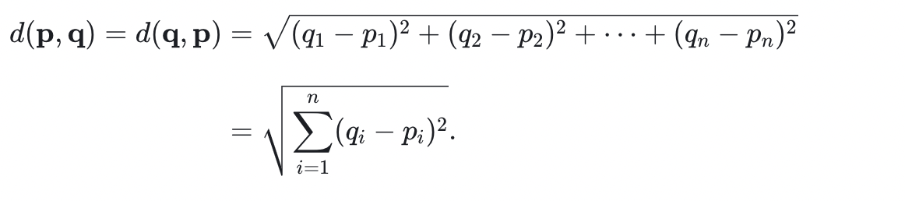 |
Since RGB Color space has three dimensions (R, G, B), its Euclidean Distance would be defined as the following:
| 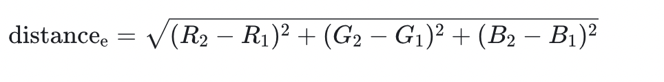 |
The RGB value coordinates we needed were mainly bold colors of red, green, yellow, and black
We can further simplify the lighting, or seemingly simplify the lighting by setting the max ray depth to 1. This avoids the nuances outside of the direct lighting and provides a simple, almost “cartoonish” lighting through reduction of complexity in lighting.
During our attempt to implement color rendering for a tattoo design, we encountered a few problems and learned some valuable lessons. One of the biggest challenges was navigating the source code of the existing implementation for color rendering within the large codebase. This required us to spend a lot of time understanding how the code worked and how we could modify it to achieve the desired effect. Another issue we encountered was having conflicts with other artistic tattoo styles when trying to achieve a smooth integration. We had to carefully consider the color palette and ensure that it was compatible with the other styles.
Although this technique worked pretty well for certain images, we noticed that the results tended to be difficult to control when we used colors that were less contrastive, especially on images that were also lower contrast. To solve this problem, we decided to take the grayscale value of each pixel and separate them into five bins and then filled the pixels within each bin with its assigned shade from our chosen palette. This helped us achieve the desired effect, particularly for scenes or meshes that had less color to begin with. Overall, this project taught us the importance of carefully considering different factors when implementing color rendering for tattoo designs, such as the color palette, integration with other styles, and image quality.
Chrome
To get the chrome effect, we kept it simple and just overlaid our outline over our rendering for the microfacet portion of project 3-2.
|
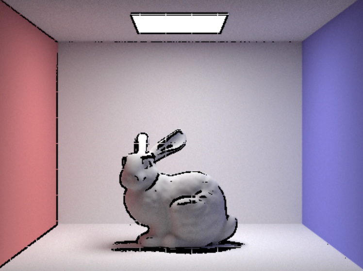
|
|
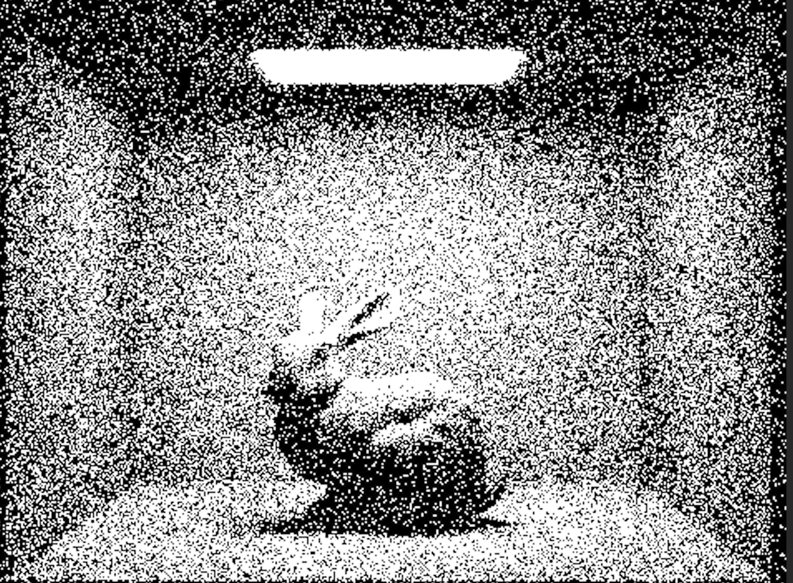
|
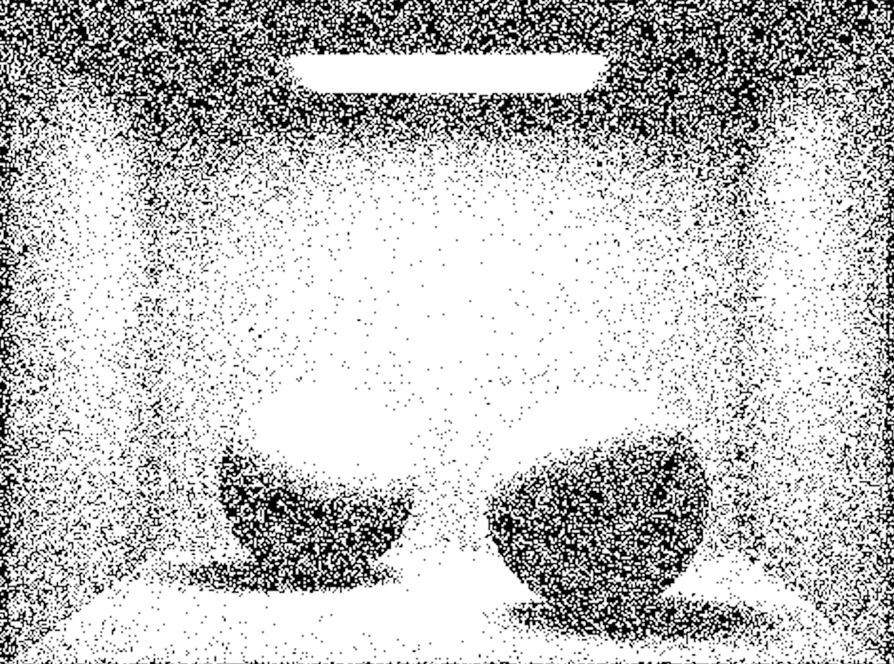
|
|
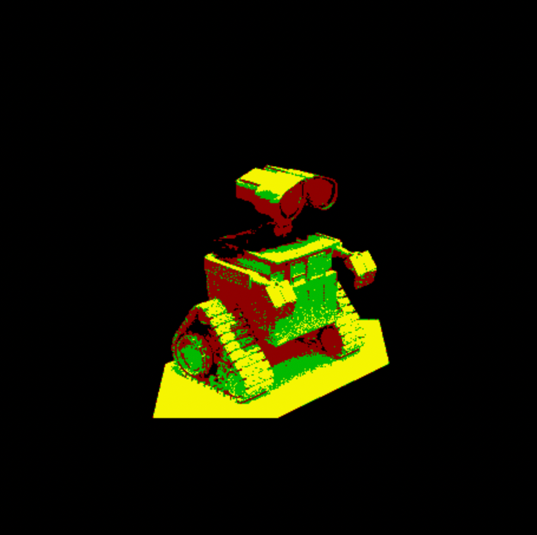
|
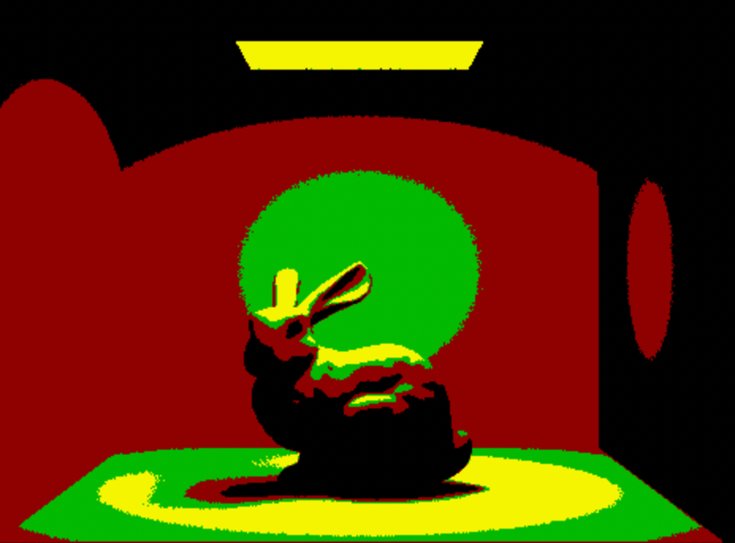
|
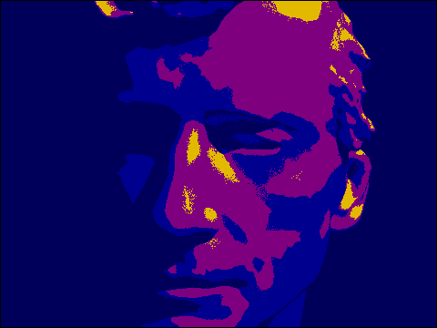
|
|
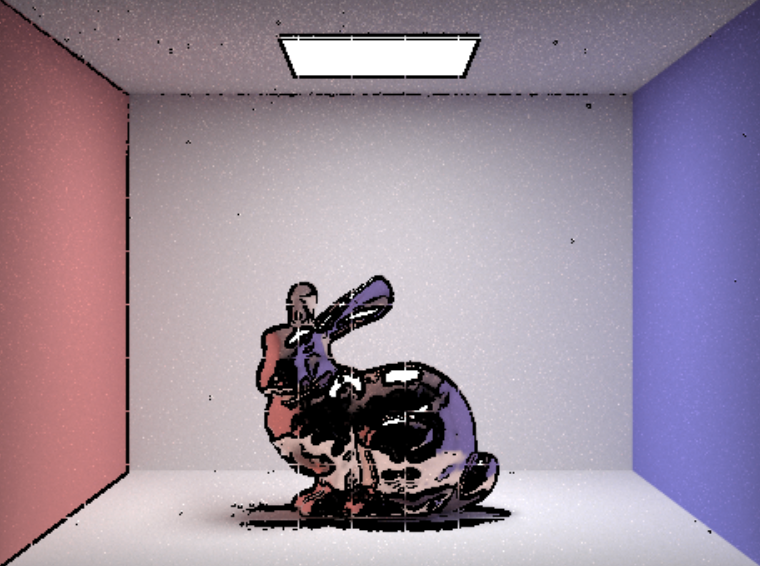
|
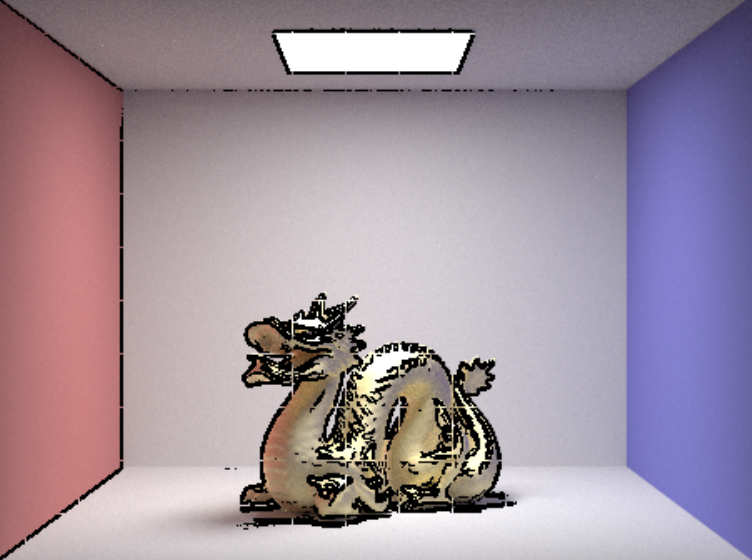
|
Overall, all of our members worked together and in sync throughout the entire project timeline! We are very happy with each other and our final project :)
Special thanks to TA Catherine Gai for looking over our checkpoint and proposal!